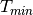
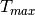
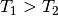
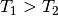
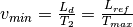
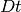
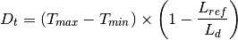
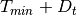

UnwrapMonitor dialog.
Table of Contents
Takes an input workspace that contains ‘raw’ data, unwraps the data according to the reference flightpath provided and converts the units to wavelength.The output workspace will have common bins in the maximum theoretical wavelength range.
| Name | Direction | Type | Default | Description |
|---|---|---|---|---|
| InputWorkspace | Input | MatrixWorkspace | Mandatory | A workspace with x values in units of TOF and y values in counts |
| OutputWorkspace | Output | MatrixWorkspace | Mandatory | The name of the workspace to be created as the output of the algorithm |
| LRef | Input | number | Mandatory | The length of the reference flight path (in metres) |
| JoinWavelength | Output | number |
This algorithm is for use with white-beam instruments with choppers. The
chopper cuts the range of wavelengths, so all detectors (including
monitors) should be reduced to the same wavelength range. This is done
using a “reference” flightpath,  , which is (usually, see
below) the flightpath of the farthest detectors.
, which is (usually, see
below) the flightpath of the farthest detectors.
If  and  are the beginning and end of the
frame, for each detector  at total flightpath
at total flightpath  the
following times are defined:
the
following times are defined:


Thus if  then 
then 
Neutron velocities (and hence wavelengths) for the detector
are calculated in the following way:
 are ignored (i.e. they are
not used in the wavelength-converted histograms)
are ignored (i.e. they are
not used in the wavelength-converted histograms) , velocities are calculated using the
formula
, velocities are calculated using the
formula 
Note that the minimum and maximum velocities for the points that are actually used are:

and 
In other words, these velocities are the same for all detectors, so the wavelength range in the transformed histogram will correspondingly be the same and this algorithm rebins the data into common bins in this range.
Occasionally, it may be that some detectors (typically downstream
monitors) may be at a *longer* flightpath than . This
depends entirely on the chopper aperture/setting. These detectors are
“frame-overlapped” - in other words, there is an ambiguity in the
definition of the wavelength for certain points, which should therefore
be excluded. These points are at the very beginning and at the very end
of the frame for a range  (equal on both sides) given by

In other words, points between and 
and between  and should be
excluded. For all other points, velocities and wavelengths are
calculated in the normal way.
and should be
excluded. For all other points, velocities and wavelengths are
calculated in the normal way.
Note that since we are dealing with histogrammed data, the cut-off values above will almost certainly not fall exactly on a bin boundary. The approach taken by this algorithm is that if any part of a bin has a value that should be excluded, then the entire bin is excluded. What this means in practice is that the edge bins will possibly have a reduced number of counts.
The input workspace must contain histogram data where the X unit is time-of-flight and the Y data is raw counts. The instrument associated with the workspace must be fully defined because detector, source & sample position are needed.
If the input workspace contains more than a single spectrum, Unwrap makes use of the rebin algorithm to set the bins on the output workspace to common values which cover the maximum theoretically accessible wavelength range.
Example - unwrapping a raw workspace.
# Create a raw data workspace.
ws = CreateSampleWorkspace()
# The result variable will contain a tuple: (OutputWorkspace, JoinWaveLength)
# To access individual outputs use result[i] where i is the index of the required output.
result = UnwrapMonitor(InputWorkspace=ws,LRef=11)
print("JoinWaveLength is: " + str(result[1]))
Output:
JoinWaveLength is: 1.4241722...
Categories: AlgorithmIndex | CorrectionFunctions\InstrumentCorrections
C++ header: UnwrapMonitor.h (last modified: 2020-03-20)
C++ source: UnwrapMonitor.cpp (last modified: 2020-04-07)